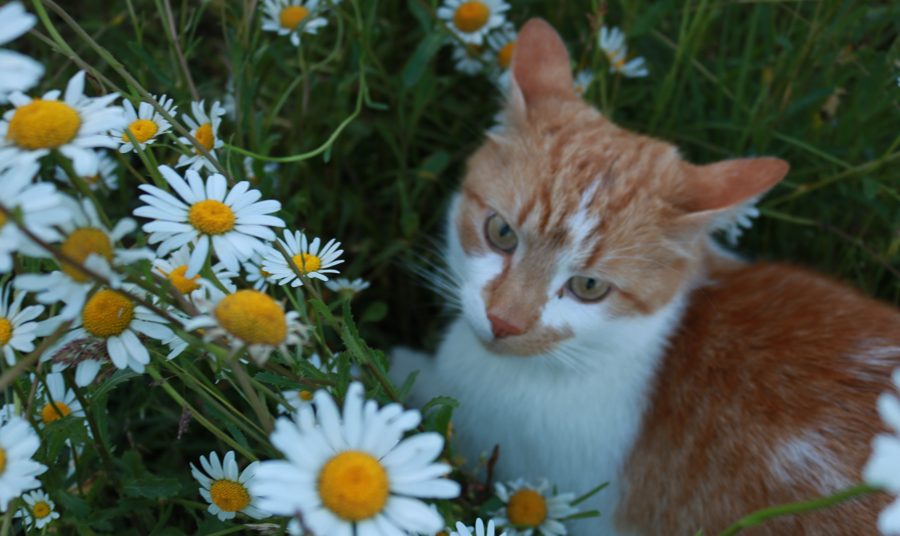
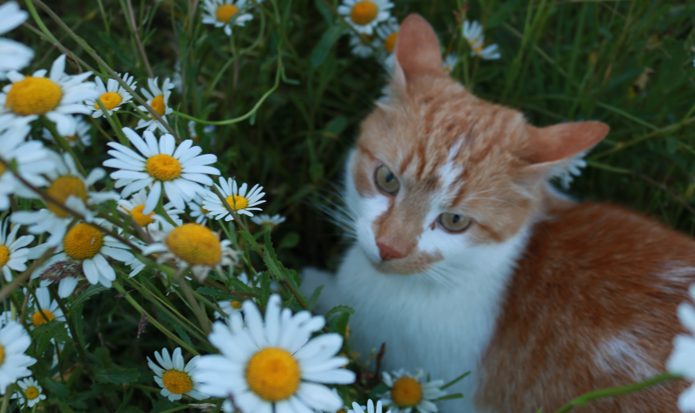

Iepazīsties ar Mailo!
Apķērīgs un zinātkārs kaķis, kas brīžiem var būt gan mīlīgs, gan palaidnīgs. Tas ir Mailo.

Mailo ir balts kaķis ar rudiem plankumiem, kuram ļoti patīk trakot. Neskatoties uz draisko raksturu, Mailo ir ļoti mīlīgs un draudzīgs kaķis. Mailo mīļākā delikatese ir mīkstā barība, bet, lai pie tās tiktu, viņš ir iemācijies eleganti pasniegt savu ķepu un iedot pieci! Kaķis ar prieku pavada laiku svaigā gaisā un ļoti novērtē, ja kāds pavelk žagariņu un paspēlējas ar viņu. Mailo ir sadraudzējies arī ar vietējiem kaķiem un bieži pavada laiku spēlējoties ar tiem!
Mailo svaigo gaisu vasarā izbauda ķerot tauriņus un citas vaboles. Viņam ļoti patīk arī spēlēt paslēpes košajās puķu dobēs un reizēm arī padraiskoties ar lapsām. Tam viņam vasarā ir ļoti daudz laika! Bet, kad tuvojas ziema, sāk palikt aukstāks un tumšāks, tādēļ, Mailo ziemā vairāk pakavējas mājās, guļot viņa iecienītajā kastītē uz palodzes vai kādā mīkstā sedziņā. Izteikti ziemā Mailo būs tas, kurš vienmēr visus, kas atnāk mājās, sagaidīs pie pašām durvīm. Bargais aukstiums nav šķērslis Mailo aktīvajām nodarbēm ārpus mājas! Runcis ļoti izbauda spēlēšanos sniegā un ar prieku ķer visas sniega pikas, kas pamestas viņa virzienā.
Mailo foto galerija
 
